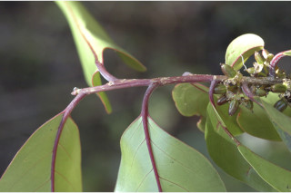
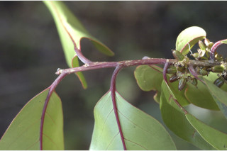
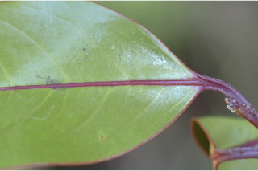
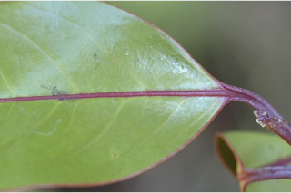

Trees up to 16 m tall.
16 ಮೀ. ಎತ್ತರದವರೆಗಿನ ಮರಗಳು.
Trees up to 16 m tall.
மரங்கள் 16 மீ. உயரம் வரை வளரக்கூடியது.
Branchlets terete, glabrous, with large lenticels.
ಕಿರುಕೊಂಬೆಗಳು ದುಂಡಾಗಿದ್ದು ದೊಡ್ಡ ಗಾತ್ರದ ಸೂಕ್ಷ್ಮ ವಾಯು ವಿನಿಮಯ ಬೆಂಡು ರಂಧ್ರಗಳ ಸಮೇತವಿದ್ದು ರೋಮರಹಿತವಾಗಿರುತ್ತವೆ.
Branchlets terete, glabrous, with large lenticels.
சிறியநுனிக்கிளைகள் குறுக்குவெட்டுத் தோற்றத்தில் வளையமானது, உரோமங்களற்றது, பெரிய லெண்டிசெல் உடையது.
Leaves simple, alternate, distichous; stipule caducous and leaving scar; petiole ca. 1.5 cm long, canaliculate, glabrous, reddish brown; lamina 7-19 x 3- 7.5 cm, elliptic-oblong or elliptic-lanceolate, apex obtusely short or long acuminate acumen twisted, base asymmetric or cuneate or attenuate, margin entire, shining above, glabrous, coriaceous, with pellucid transparent dots and lines, blackish green when dry; midrib raised above; secondary_nerves 10-12 pairs; tertiary_nerves broadly reticulate.
ಎಲೆಗಳು ಸರಳವಾಗಿದ್ದುಪರ್ಯಾಯ ಜೋಡನಾ ವ್ಯವಸ್ಥೆಯಲ್ಲಿದ್ದು ಕಾಂಡದ ಎರಡೂ ಕಡೆ ಎದುರು ಬದರಿನ ಲಂಬ ಸಾಲಿನಲ್ಲಿರುತ್ತವೆ;ತೊಟ್ಟುಗಳು ಅಂದಾಜು 1.5 ಸೆಂ.ಮೀ. ಉದ್ದ ಹೊಂದಿದ್ದು ಕಾಲುವೆಗೆರೆ ಸಮೇತವಿದ್ದು ರೋಮರಹಿತವಾಗಿರುತ್ತವೆ ಹಾಗೂ ಕೆಂಪು ಮಿಶ್ರಿತ ಕಂದು ಬಣ್ಣದಿಂದ ಕೂಡಿರುತ್ತವೆ; ಪತ್ರಗಳು 7 – 19 X 3 – 7.5 ಸೆಂ.ಮೀ. ಗಾತ್ರವಿದ್ದು ಅಂಡವೃತ್ತ – ಭರ್ಜಿಯ, ಚೂಪಲ್ಲದ ಅಥವಾ ಉದ್ದವಾದ,ತೀಕ್ಣಾಗ್ರ ತಿರುವಿಕೊಂಡಿರುವ ಕ್ರಮೇಣ ಚೂಪಾಗುವ ತುದಿ, ಅಸಮವಾದ ಅಥವಾ ಬೆಣೆಯಾಕಾರದ ಅಥವಾ ಒಳಬಾಗಿದ ಬುಡ ಮತ್ತುನಯವಾದ ಅಂಚು ಹೊಂದಿದ್ದು ಪತ್ರದ ಮೇಲ್ಭಾಗ ಹೊಳಪಿನಿಂದ ಕೂಡಿರುತ್ತದೆ, ಪತ್ರ ರೋಮರಹಿತವಾಗಿದ್ದು, ಪ್ರಕಾಶ ಭೇಧ್ಯ ಹಾಗೂ ಪಾರದರ್ಶಕವಾದ ಚುಕ್ಕೆ ಮತ್ತು ಗೆರೆಗಳಿಂದ ಕೂಡಿದ ತೊಗಲನ್ನೋಲುವ ಮೇಲ್ಮೈ ಹೊಂದಿರುತ್ತವೆ ಮತ್ತು ಒಣಗಿದಾಗ ಕಪ್ಪು ಮಿಶ್ರಿತ ಹಸಿರು ಬಣ್ಣದಲ್ಲಿರುತ್ತವೆ;ಮಧ್ಯ ನಾಳ ಮೇಲ್ಭಾಗದಲ್ಲಿ ಮೇಲೆದ್ದಿರುತ್ತದೆ; ಎರಡನೇ ದರ್ಜೆಯ ನಾಳಗಳು 10 ರಿಂದ 12 ಜೋಡಿಗಳಿರುತ್ತವೆ; ಮೂರನೇ ದರ್ಜೆಯ ನಾಳಗಳು ವಿಶಾಲ ಜಾಲಬಂಧ ನಾಳವಿನ್ಯಾಸವನ್ನು ಹೊಂದಿರುತ್ತವೆ.
Leaves simple, alternate, distichous; stipule caducous and leaving scar; petiole ca. 1.5 cm long, canaliculate, glabrous, reddish brown; lamina 7-19 x 3- 7.5 cm, elliptic-oblong or elliptic-lanceolate, apex obtusely short or long acuminate acumen twisted, base asymmetric or cuneate or attenuate, margin entire, shining above, glabrous, coriaceous, with pellucid transparent dots and lines, blackish green when dry; midrib raised above; secondary_nerves 10-12 pairs; tertiary_nerves broadly reticulate.
இலைகள் தனித்தவை, மாற்றுஅடுக்கமானவை, இருநெடுக்கு வரிசையிலையடுக்கம் (டைஸ்டிக்கஸ்); இலையடிச்செதில் எளிதில் உதிரக்கூடியவை மற்றும் தழும்புகளை ஏற்படுத்தவல்லது; இலைக்காம்பு 1.5 செ.மீ. நீளமானது, குறுக்குவெட்டுத் தோற்றத்தில் கேனாலிகுலேட், உரோமங்களற்றது, சிவப்பு-ப்ரவுன் நிறமானது; இலை அலகு 7-19 X 3- 7.5 செ.மீ., நீள்வட்ட-நீள்சதுர வடிவானது அல்லது நீள்வட்ட-ஈட்டி வடிவானது, அலகின் நுனி அதிக்கூரியதுடன் அதன் முனை மழுங்கியது மற்றும் முனை திருகியது, அலகின் தளம் சமமற்றது அல்லது ஆப்பு வடிவானது அல்லது அட்டனுவேட், அலகின் விளிம்பு முழுமையானது, அலகின் மேற்பரப்பு பளபளப்பானது, உரோமங்களற்றது, கோரியேசியஸ், ஒளிபுகும் சுரப்பி புள்ளி மற்றும் கோடுகளுடையது, உலரும் போது கரும்பச்சை நிறமானது; மையநரம்பு மேற்புறத்தில் அலகின் பரப்பைவிட உயர்ந்து இருக்கும்; இரண்டாம் நிலை நரம்புகள் 10-12 ஜோடிகள்; மூன்றாம் நிலை நரம்புகள் அகன்ற வலைப்பின்னல் போன்றவை.
Flowers ca. 0.4 cm across, greenish white.
ಹೂಗಳು ಅಂದಾಜು 0.4 ಸೆಂ.ಮೀ. ಅಡ್ಡಗಲತೆ ಹೊಂದಿದ್ದು ಹಸಿರು ಮಿಶ್ರಿತ ಬಿಳಿ ಬಣ್ಣವನ್ನು ಹೊಂದಿರುತ್ತವೆ.
Flowers ca. 0.4 cm across, greenish white.
மலர்கள் 0.4 செ.மீ. குறுக்களவுடையது, பச்சை-வெள்ளை நிறமானது.
Capsule globular, ca. 2 cm long, orange yellow when ripe.
ಸಂಪುಟ ಫಲಗಳು ಅಂಡವೃತ್ತದ ಆಕಾರದಲ್ಲಿದ್ದು ಅಂದಾಜು 2 ಸೆಂ.ಮೀ. ಉದ್ದ ಹೊಂದಿರುತ್ತವೆ ಮತ್ತು ಕಳೆತಾಗ ಕಿತ್ತಳೆ ಮಿಶ್ರಿತ ಹಳದಿಬಣ್ಣದಲ್ಲಿರುತ್ತವೆ; ಬೀಜಗಳು ಹೆಚ್ಚಿನ ಸಂಖ್ಯೆಯಲ್ಲಿದ್ದು ಪತ್ರೆ ಸಮೇತವಾಗಿರುತ್ತವೆ.
Capsule globular, ca. 2 cm long, orange yellow when ripe.
வெடிகனி (கேப்சியூல்) கோள வடிவமானது, 2 செ.மீ. நீளமானது, கனியும் போது ஆரஞ்ச்-மஞ்சள் நிறமானவை.
 



 
